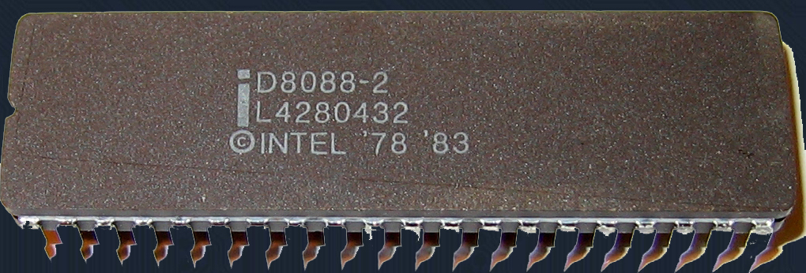
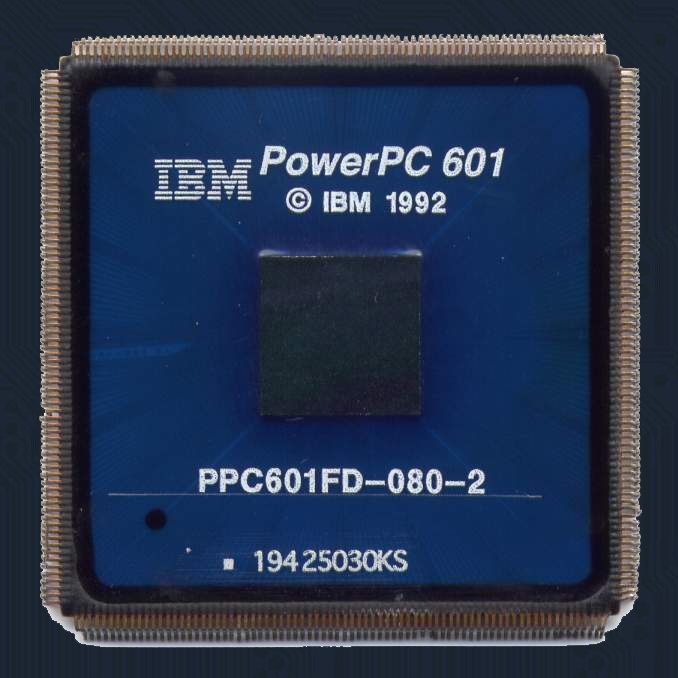
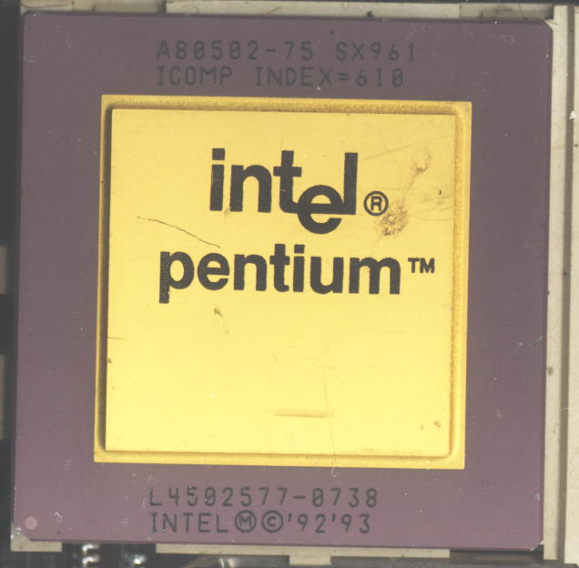
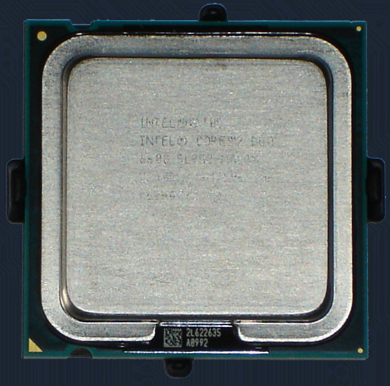

|
|
Типы корпусов процессоровПосле изготовления кристалла с ядрами и дополнительными схемами (например, кэшем), для применения в конечном изделии ядерный процессор упаковывается в защитный корпус. Тип корпуса выбирается в зависимости от назначения системы, в которой будет работать процессор. |
|---|
DIP.
(dual inline package) — корпус с двумя рядами
контактов для впайки в отверстия в печатной плате.
Представляет собой прямоугольный корпус с расположенными на длинных
сторонах контактами. В зависимости от материала корпуса выделяют два
варианта исполнения:
PDIP (plastic DIP) — имеет пластиковый корпус;
CDIP (ceramic DIP) — имеет керамический корпус.

QFP
Процессор в корпусе TQFP-304
QFP (quad flat package) — плоский корпус с четырьмя рядами контактоd для
поверхностного монтажа. Представляет собой квадратный/прямоугольный корпус
с выходящими из торцов краёв контактами. В зависимости от материала корпуса
выделяют два варианта исполнения:
PQFP (plastic QFP) — имеет пластиковый корпус;
CQFP (ceramic QFP) — имеет керамический корпус;

PGA
Процессор в корпусе CPGA
Процессор в корпусе FCPGA
Процессор в корпусе FCPGA2
PGA (pin grid array) — корпус с матрицей выводов. Представляет собой квадратный
или прямоугольный корпус с расположенными в нижней части штыревыми контактами. В
зависимости от материала корпуса выделяют три варианта исполнения:
PPGA (plastic PGA) — имеет пластиковый корпус;
CPGA (ceramic PGA) — имеет керамический корпус;
OPGA (organic PGA) — имеет корпус из органического материала.

LGA
LGA (land grid array) — представляет собой корпус PGA, в котором штырьковые
контакты заменены на контактные площадки. Может устанавливаться в специальное
гнездо, имеющее пружинные контакты, либо устанавливаться на печатную плату.
В зависимости от материала корпуса выделяют три варианта исполнения:
CLGA (ceramic LGA) — имеет керамический корпус;
PLGA (plastic LGA) — имеет пластиковый корпус;
OLGA (organic LGA) — имеет корпус из органического материала;
